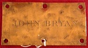

John Bryan
Albany resident John Bryan later claimed that he was born in New York City on the fourth of July in 1765. At this point we seek information on his origins and path to Albany. Caution is required as a number of same-named contemporaries are at risk.
This John Bryan's father died when he was four and this son was sent to live with Alsop and James Hunt, leather dressers. As they were "good Whigs," in 1776 the Hunts fled New York for White Plains. There young Bryan found himself in the Westchester militia before his fifteenth birthday. He later recounted his service and sufferings which lasted until the end of the war. He also deposed that he served in the War of 1812 as well.
In 1790, a John Bryan was identified as the head of a household and the census of Orangetown, Orange County.
Traditional sources claim that he was married three times. Born in 1765, we seek documentation for a first marriage between 1785 and 1795. Perhaps his first (or second) wife "Huldah Carmichael," whom he married in 1798, died in Albany on November 23, 1808 at the age of forty. A Catherine Carmichael of Morristown, New Jersey is said to have been his third wife.
In 1800 and afterwards, his Washington Street home was configured on the first ward census.
He was known as a merchant as early as 1803. In September 1803, he obtained a lot on the southwestern corner of Green and Beaver Streets from the Widow Catherine Ostrander. He was a member of the Albany Mechanics Society and an officer in a number of Albany-based civic and commercial enterprises. He was among the first directors of the Mechanics & Farmers Bank.
Perhaps in 1815, he purchased Schuyler Mansion from the heirs of the late general. An often-viewed drawing of the estate made by architect Philip Hooker in 1818 carries the inscription "View of Bryan's Place."
This newcomer merchant also was a furrier of some note (said to have been in business with John Jacob Astor in 1815). His extensive Albany-based fur business rested on dressing and dying seal skins. A portrait (by Ezra Ames about 1815) shows Bryan draped in furs. A number of family portraits and other items were transferred to the New-York Historical Society in 1961.
Beginning with the first edition in 1813, he was listed in the city directory as a furrier with an address at what became 47 South Pearl Street and a shop at what became 393 South Market Street. In 1817 and afterwards, the directories listed his address as simply "South Pearl" - probably meaning he had moved to Schuyler Mansion. In 1830, the directory fixed his address as "Schuyler Street near South Pearl."
In September 1832, he attested to the Revolutionary wartime service outlined above at the Justice's Court in Albany.
John Bryan died in 1849.
A typescript of the affidavit he filed in 1832 is available via revwarny.com. Because it is not always accessible, we will transcribe and appropriate it soon.
Bryan's brass door plate dated at 1815 in the collection of the New-York Historical Society. Copied from an online posting.